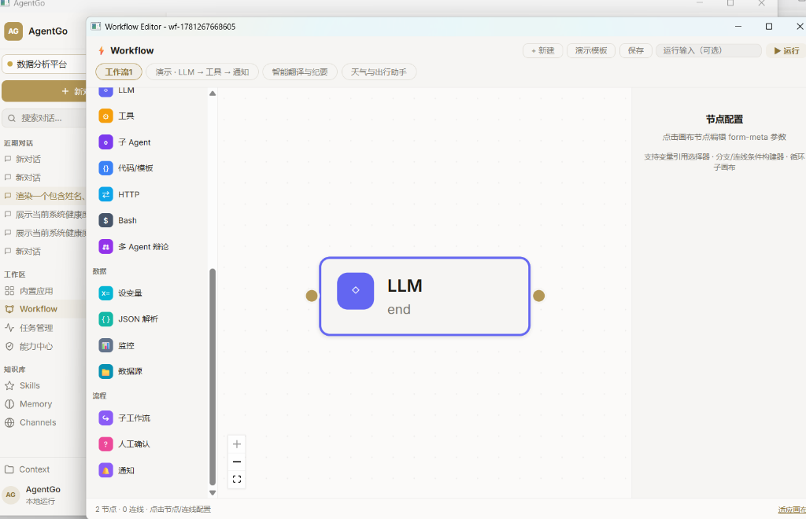
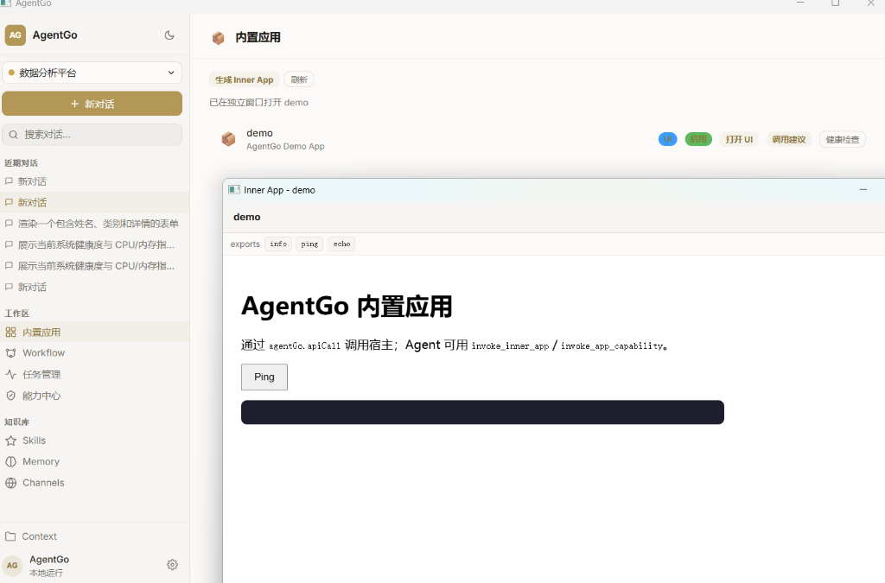

Let agent Go! An ultra-high performance desktop agent runtime built using Go, ByteDance Eino ADK, and Wails v3. Visually design, verify, and execute local multi-agent systems with absolute ease.


Designed with absolute modularity and enterprise safety in mind.
Uses ByteDance's Eino DAG runtime, supporting visual workflows with automatic loops, branch evaluations, checkpoint persistence, and seamless manual HITL interrupts.
A central service registry that dynamically maps and synchronizes static tools, dynamic Eino sub-graphs, micro-applications, and sub-agents into a unified access matrix.
Enforce canvas limits, token budgets, and runtime security policies. Intercept capability calls at the boundary level to ensure robust compliance and avoid runaway billing.
Monitor LLM contexts in real time. Features a Truth Queue for resolving system contradictions, Graph View for plotting memory associations, and live Injection Previews.
Automate multi-agent coordination based on CapabilityBus events. Support Supervisor agents, compose pipelines, and fallback legacy coordinators with audit trails.
Let natural language generate real desktop views. Built-in iterative generation, mock evaluation, and automatic fixing allow the creation of stable mini-applications.
Ensuring systematic management at each lifecycle phase of an intelligent asset.
Draft capabilities manually or prompt LLMs to synthesize functional UI or Eino workflow DAG scripts dynamically.
Index assets automatically on the CapabilityBus. Expose actions instantly without restarting the desktop application.
Apply canvas resource limits, concurrency boundaries, token budgets, and trigger Human-In-The-Loop approvals.
Compile visual workflows into single callable tools. Expose them to other sub-agents to compose nesting agent swarms.
Coordinate agents using the App Matrix engine. Trigger chain tasks automatically when capability signals fire.
Trace steps, monitor execution limits, and visualize local cognitive layers using the 1-hop Graph view.
Utilize the deterministic validator to scan layouts. Automatically invoke AI auto-fix feedback loops if tests fail.
Persist vetted workflows, tools, and mock layouts into memory catalogs for team reuse and future discoveries.
Discover unique advantages designed for natural language execution.
Prompt natural language to generate fully functioning desktop views. AgentGo provides an isolated sandbox for testing layouts before deployment.
Convert descriptive commands into Eino graph executions. Once built, compile them back into reusable tools that other agents can easily call.
Ensuring clear isolation from lower level primitives up to consumer interfaces.
We believe local AI systems should keep your secrets local. AgentGo does not hardcode, expose, or upload your API credentials. SQLite databases, application caches, and temporary settings live safely under Git-ignored local data directories.
Configure your LLM credentials securely via the desktop settings panel or your ignored local data/config.json file.